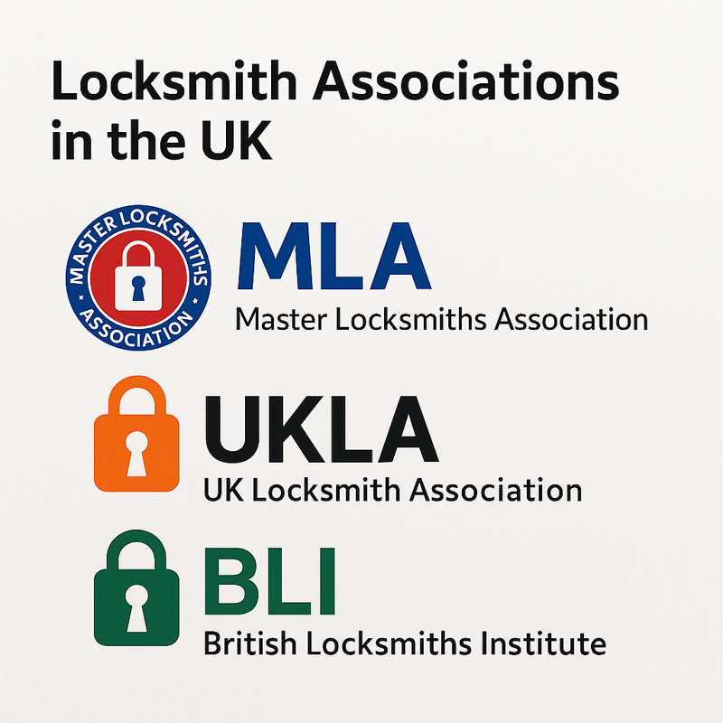

Your trusted locksmith service in Northern Ireland
Email us at help@securelockni.uk
Click the image below to learn more about professional locksmith bodies in the UK:
| Service | Price |
|---|---|
| Emergency Callout (Public Holiday) | £130 |
| Lock Replacement | From £85 |
| Lost Key Replacement | From £75 |
| uPVC Door Lock Adjustment | £55 |
| New Cylinder Installation | From £65 |
| Home Security Assessment | £40 |
Note: Final pricing may vary depending on location, time of day, and type of lock or system involved.